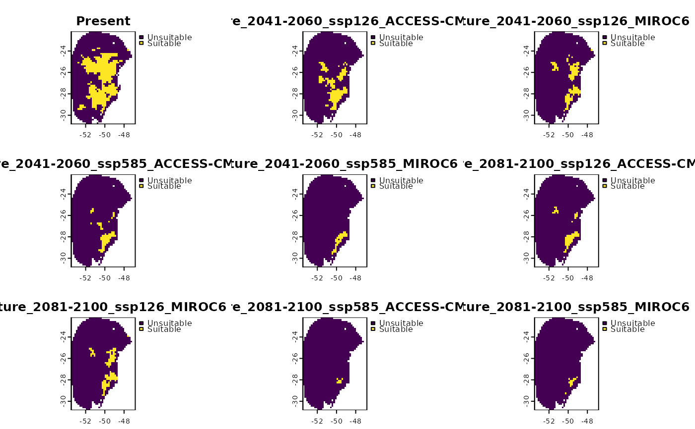
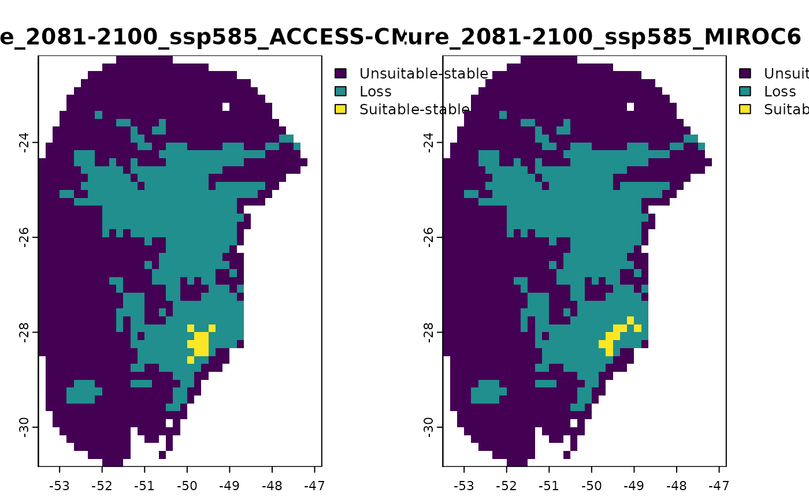
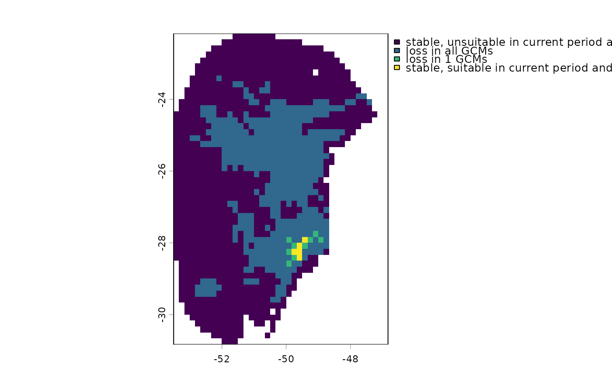
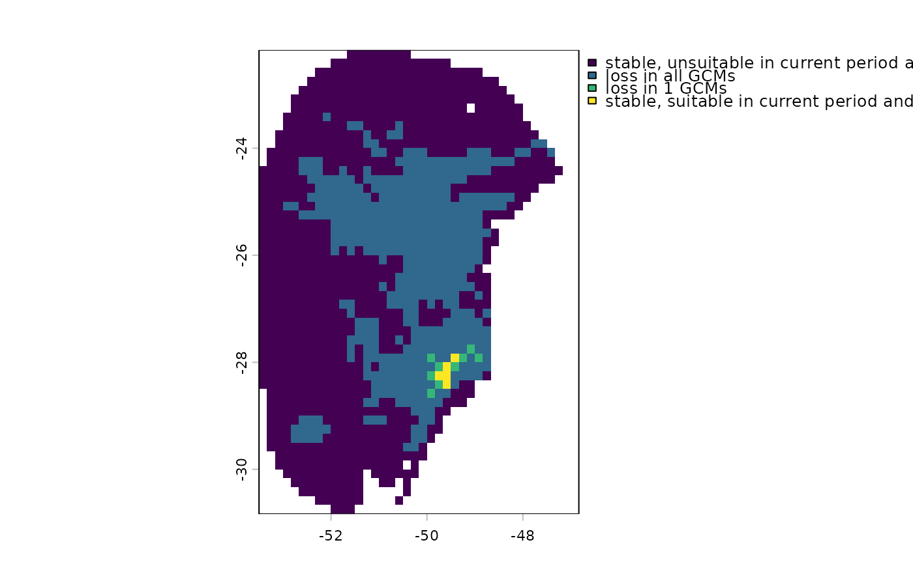

Compute changes of suitable areas between scenarios
projection_changes.RdThis function performs map algebra operations to represent how and where suitable areas change compared to the scenario in which the model was trained. Changes are identified as loss (contraction), gain (expansion) and stability. If multiple climate models (GCM) are used, it calculates the level of agreement among them for each emission scenario.
Usage
projection_changes(model_projections, reference_id = 1, consensus = "median",
include_id = NULL, user_threshold = NULL, by_gcm = TRUE,
by_change = TRUE, general_summary = TRUE,
force_resample = TRUE, write_results = TRUE,
output_dir = NULL, overwrite = FALSE,
write_bin_models = FALSE, return_raster = FALSE)Arguments
- model_projections
a
model_projectionsobject generated by theproject_selected()function. This object contains the file paths to the raster projection results and the thresholds used for binarization of predictions.- reference_id
(numeric) the reference ID for the projections corresponding to the current time in
model_projections. Default is 1. See the details section for further information.- consensus
(character) the consensus measure to use for calculating changes. Available options are 'mean', 'median', 'range', and 'stdev' (standard deviation). Default is 'median'.
- include_id
(numeric) a vector containing the reference IDs to include when computing changes. Default is
NULL, meaning all projections will be included. See the details section for further information.- user_threshold
(numeric) an optional threshold for binarizing the predictions. Default is
NULL, meaning the function will apply the thresholds stored in model_projections, which were calculated earlier using the omission rate fromcalibration().- by_gcm
(logical) whether to compute changes across GCMs. Default is TRUE.
- by_change
(logical) whether to compute results separately for each change, identifying areas of gain, loss, and stability for each GCM. Default is TRUE.
- general_summary
(logical) whether to generate a general summary, mapping how many GCMs project gain, loss, and stability for each scenario. Default is TRUE.
- force_resample
(logical) whether to force the projection rasters to have the same extent and resolution as the raster corresponding to the
reference_id, which represents the current projections. Default is TRUE.- write_results
(logical) whether to write the raster files containing the computed changes to the disk. Default is TRUE.
- output_dir
(character) the directory path where the resulting raster files containing the computed changes will be saved. Only relevant if
write_results = TRUE.- overwrite
(logical) whether to overwrite SpatRaster if they already exist. Only applicable if
write_resultsis set to TRUE. Default is FALSE.- write_bin_models
(logical) whether to write the binarized models for each GCM to the disk. Default is FALSE.
- return_raster
(logical) whether to return a list containing all the SpatRasters with the computed changes. Default is FALSE, meaning the function will return a NULL object. Setting this argument to TRUE while using multiple GCMs at a large extent and fine resolution may overload the RAM.
Value
If return_raster = TRUE, the function returns a list containing the SpatRasters with the computed changes. The list includes the following elements:
Binarized: binarized models for each GCM.
Results_by_gcm: computed changes for each GCM.
Results_by_change: a list where each SpatRaster represents a specific change.
Summary_changes: A general summary that indicates how many GCMs project gain, loss, and stability for each scenario If return_raster = FALSE, the function returns a NULL object.
Details
When comparing changes in binarized prodictions over time, there are four possible outcomes:
Stable-Suitable: the area remains suitable in both the current and projected times.
Stable-Unsuitable: the area remains unsuitable in both the current and projected times.
Gain: the area is unsuitable in the current time but becomes suitable in the projected time (indicating expansion).
Loss: The area is suitable in the current time but becomes unsuitable in the projected time (indicating contraction).
The reference scenario (current conditions) can be accessed in the paths element of the model_projections object (model_projections$path). The ID will differ from 1 only if there is more than one projection for the current conditions.
Specific projections can be included or excluded from the analysis using the
include_id argument. For example, setting 'include_id = c(3, 5, 7)' will
compute changes only for scenarios 3, 5, and 7. Conversely, setting
'include_id = -c(3, 5, 7)' will exclude scenarios 3, 5, and 7 from the
analysis.
Examples
# Step 1: Organize variables for current projection
## Import current variables (used to fit models)
var <- terra::rast(system.file("extdata", "Current_variables.tif",
package = "kuenm2"))
## Create a folder in a temporary directory to copy the variables
out_dir_current <- file.path(tempdir(), "Current_raw3")
dir.create(out_dir_current, recursive = TRUE)
## Save current variables in temporary directory
terra::writeRaster(var, file.path(out_dir_current, "Variables.tif"))
# Step 2: Organize future climate variables (example with WorldClim)
## Directory containing the downloaded future climate variables (example)
in_dir <- system.file("extdata", package = "kuenm2")
## Create a folder in a temporary directory to copy the future variables
out_dir_future <- file.path(tempdir(), "Future_raw3")
## Organize and rename the future climate data (structured by year and GCM)
### 'SoilType' will be appended as a static variable in each scenario
organize_future_worldclim(input_dir = in_dir, output_dir = out_dir_future,
name_format = "bio_", fixed_variables = var$SoilType)
#>
|
| | 0%
|
|========= | 12%
|
|================== | 25%
|
|========================== | 38%
|
|=================================== | 50%
|
|============================================ | 62%
|
|==================================================== | 75%
|
|============================================================= | 88%
|
|======================================================================| 100%
#>
#> Variables successfully organized in directory:
#> /tmp/RtmpraqRyK/Future_raw3
# Step 3: Prepare data to run multiple projections
## An example with maxnet models
## Import example of fitted_models (output of fit_selected())
data(fitted_model_maxnet, package = "kuenm2")
## Prepare projection data using fitted models to check variables
pr <- prepare_projection(models = fitted_model_maxnet,
present_dir = out_dir_current,
future_dir = out_dir_future,
future_period = c("2041-2060", "2081-2100"),
future_pscen = c("ssp126", "ssp585"),
future_gcm = c("ACCESS-CM2", "MIROC6"),
raster_pattern = ".tif*")
# Step 4: Run multiple model projections
## A folder to save projection results
out_dir <- file.path(tempdir(), "Projection_results/maxnet1")
dir.create(out_dir, recursive = TRUE)
## Project selected models to multiple scenarios
p <- project_selected(models = fitted_model_maxnet, projection_data = pr,
out_dir = out_dir)
#>
|
| | 0%
|
|======== | 11%
|
|================ | 22%
|
|======================= | 33%
|
|=============================== | 44%
|
|======================================= | 56%
|
|=============================================== | 67%
|
|====================================================== | 78%
|
|============================================================== | 89%
|
|======================================================================| 100%
# Step 5: Identify areas of change in projections
## Contraction, expansion and stability
changes <- projection_changes(model_projections = p, write_results = FALSE,
return_raster = TRUE)
terra::plot(changes$Binarized) # SpatRaster with the binarized predictions

terra::plot(changes$Results_by_gcm) # SpatRaster with changes by GCM

changes$Results_by_change # List of SpatRaster(s) by changes with GCM agreement
#> $`Future_2041-2060_ssp126`
#> class : SpatRaster
#> size : 52, 40, 4 (nrow, ncol, nlyr)
#> resolution : 0.1666667, 0.1666667 (x, y)
#> extent : -53.5, -46.83333, -30.83333, -22.16667 (xmin, xmax, ymin, ymax)
#> coord. ref. : lon/lat WGS 84 (EPSG:4326)
#> source(s) : memory
#> names : Unsuitable-stable, Gain, Loss, Suitable-stable
#> min values : Unsuitable-stable in 0 GCMs, Gain in 0 GCMs, Loss in 0 GCMs, Suitable-stable in 0 GCMs
#> max values : Unsuitable-stable in 2 GCMs, Gain in 2 GCMs, Loss in 2 GCMs, Suitable-stable in 2 GCMs
#>
#> $`Future_2041-2060_ssp585`
#> class : SpatRaster
#> size : 52, 40, 4 (nrow, ncol, nlyr)
#> resolution : 0.1666667, 0.1666667 (x, y)
#> extent : -53.5, -46.83333, -30.83333, -22.16667 (xmin, xmax, ymin, ymax)
#> coord. ref. : lon/lat WGS 84 (EPSG:4326)
#> source(s) : memory
#> names : Unsuitable-stable, Gain, Loss, Suitable-stable
#> min values : Unsuitable-stable in 0 GCMs, Gain in 0 GCMs, Loss in 0 GCMs, Suitable-stable in 0 GCMs
#> max values : Unsuitable-stable in 2 GCMs, Gain in 2 GCMs, Loss in 2 GCMs, Suitable-stable in 2 GCMs
#>
#> $`Future_2081-2100_ssp126`
#> class : SpatRaster
#> size : 52, 40, 4 (nrow, ncol, nlyr)
#> resolution : 0.1666667, 0.1666667 (x, y)
#> extent : -53.5, -46.83333, -30.83333, -22.16667 (xmin, xmax, ymin, ymax)
#> coord. ref. : lon/lat WGS 84 (EPSG:4326)
#> source(s) : memory
#> names : Unsuitable-stable, Gain, Loss, Suitable-stable
#> min values : Unsuitable-stable in 0 GCMs, Gain in 0 GCMs, Loss in 0 GCMs, Suitable-stable in 0 GCMs
#> max values : Unsuitable-stable in 2 GCMs, Gain in 2 GCMs, Loss in 2 GCMs, Suitable-stable in 2 GCMs
#>
#> $`Future_2081-2100_ssp585`
#> class : SpatRaster
#> size : 52, 40, 4 (nrow, ncol, nlyr)
#> resolution : 0.1666667, 0.1666667 (x, y)
#> extent : -53.5, -46.83333, -30.83333, -22.16667 (xmin, xmax, ymin, ymax)
#> coord. ref. : lon/lat WGS 84 (EPSG:4326)
#> source(s) : memory
#> names : Unsuitable-stable, Gain, Loss, Suitable-stable
#> min values : Unsuitable-stable in 0 GCMs, Gain in 0 GCMs, Loss in 0 GCMs, Suitable-stable in 0 GCMs
#> max values : Unsuitable-stable in 2 GCMs, Gain in 2 GCMs, Loss in 2 GCMs, Suitable-stable in 1 GCMs
#>
terra::plot(changes$Results_by_change$`Future_2041-2060_ssp585`) # an example of the previous
 terra::plot(changes$Summary_changes) # SpatRaster with a general summary

terra::plot(changes$Summary_changes) # SpatRaster with a general summary
